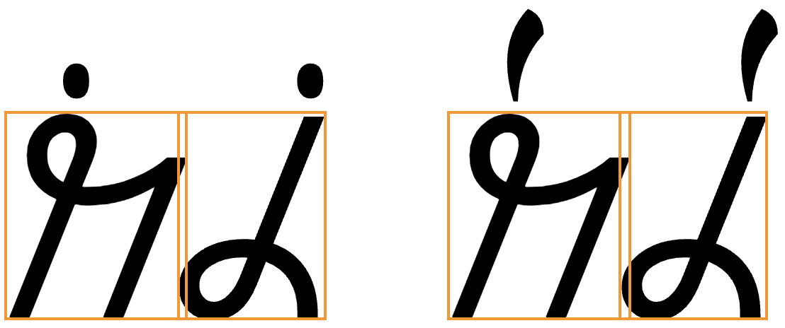

This page brings together basic information about the Wancho script and its use for the Wancho language. It aims to provide a brief, descriptive summary of the modern, printed orthography and typographic features, and to advise how to write Wancho using Unicode.
Wancho is a Sino-Tibetan language with around 50,000 speakers, spoken in Arunachal Pradesh, Nagaland, Myanmar, and Bhutan. This recently created Wancho orthography is taught in some schools, and there is one book.@Story of the Wancho Script,https://indianculture.gov.in/snippets/story-wancho-script The language is more commonly written using the Devanagari or Latin scripts.
𞋒𞋀𞋉𞋃𞋕 𞋈𞋀𞋜𞋐𞋜
The orthography was created by Banwang Losu between 2001 and 20013.
The Wancho script is an alphabet. This means that it is largely phonetic in nature, where each letter represents a basic sound. See the table to the right for a brief overview of features for the Wancho language.
Wancho text runs left-to-right in horizontal lines. There is no case distinction. Words are separated by spaces.
Wancho is an alphabet where 6 basic vowel sounds are written using 6 letters. However, additional letters represent 4 nasalised vowel sounds, and a further 4 vowels followed by ŋ. One more letter represents a diphthong, although other diphthongs are represented by combinations of vowels.
Word-initial standalone vowels are just written using vowel letters.
The following represents basic information about the repertoires of the Upper and Lower dialects of the Wancho language. For more details, see Burling & Wangsu and Losu & Morey.
Click on the sounds to reveal locations in this document where they are mentioned.
Phones in a lighter colour are non-native or allophones. Source Wikipedia.
Vowel sounds
Plain vowels
Sometimes o is transcribed as ɔː, especially when nasalised.
The sound we represent with a here could also be transcribed as aː, contrasting in length with ə.
Consonant sounds
labial
dental
alveolar
post-
alveolar
palatal
velar
uvular
pharyngeal
epiglottal
glottal
stop
pb pʰ
td tʰ
kɡ kʰ
ʔ
affricate
t͡s
t͡ʃ
fricative
fβ
sz
ʃʒ
h
nasal
m
n
ɲ
ŋ
approximant
ʋw
l
j
trill/flap
r
The sound shown here as tʰ is sometimes transcribed as θ.
The sound shown here as d͡ʒ is sometimes transcribed as ʒ.
Tone
Wancho is a tonal language but the 2 major dialects, Northern and Southern, use tones in slightly different ways. Upper Wancho has lòw, mid, and hígh tones. Lower Wancho has high⁴⁴, falling⁵², and low¹¹ tones.
Both also have a checked tone, which occurs when the syllable ends with a short vowel followed by a glottal stop.e
Where multiple syllables occur together, tones tend to interact to produce different values for certain syllablesbw2. (Those differences are not described in detail in the examples on this page.)
Structure
The typical syllable in Wancho has the following pattern.
(C (M)) V (V) (C)
Legend
C
Consonant.
V
Vowel.
S
Semi-vowel.
M
Meidal consonant.
Onset
The only true medial consonant appears to occur in the sequence tr̥. Initial consonants followed by a glide are written as diphthongs.
Nucleus
Can include diphthongs with an on-glide or an off-glide.
Coda
Wancho syllables can end with p, t, k, ʔ, m, n, and ŋ.
Vowels
Vowel summary table
The following table summarises the main vowel to character assigments.
The middle column shows nasalised vowels. The right-hand column, vowels followed by a velar nasal and represented by a dedicated character.
These are dedicated vowel letters for basic vowel sounds.
𞋜␣𞋞␣𞋛␣𞋕␣𞋁␣𞋀
Vowels with nasalisation or nasal endings
Wancho also has a number of letters that simultaneously indicate nasalisation or a following velar nasal.
𞋥␣𞋪␣𞋧␣𞋦␣𞋢␣𞋤␣𞋨␣𞋣
Diphthongs
One Wancho letter represents a diphthong.
𞋖
Other diphthongs are written using a sequence of vowel letters, such as the following.
𞋀𞋜␣ ␣𞋁𞋜␣𞋁𞋞
Standalone vowels
Standalone vowels are written using the normal vowel signs with no special additional mechanisms.
𞋀𞋊𞋞
Nasalisation
Nasalisation is indicated by the choice of letter. See nasalisedV.
Tones
Tone marking is slightly complicated due to the fact that Upper and Lower Wancho dialects use tones in different ways, and the Wancho orthography has been designed to handle each separately. In addition, the unmarked tone is not the mid tone, and differs depending on the dialect.
𞋮␣𞋯
Upper Wancho uses the above combining marks to indicate mid and high tones, respectively. The low tone is not marked.
𞋋𞋞
𞋋𞋞𞋮
𞋋𞋞𞋯
𞋬␣𞋭
Lower Wancho uses the above combining marks to indicate falling and low tones, respectively. The high tone is not marked.
𞋑𞋜
𞋈𞋕𞋜𞋬
𞋑𞋜𞋭
In both dialects, the checked tone is not marked with a combining character, but a glottal stop is written at the end of the syllable.
𞋋𞋞𞋫
𞋈𞋜𞋫
Consonants
Consonant summary table
The following table summarises the main consonant to character assigments.
Whereas the table just above takes you from sounds to letters, the following simply lists the basic consonant letters (however, since the orthography is highly phonetic there is little difference in ordering).
Wancho letters don't interact, so no special shaping is needed.
Base characters carry only a single combining mark.
Some small adjustments may be needed for the placement of tone marks relative to the base letter, but these are mostly horizontal, since Wancho letters tend to have the same height. fig_gpos shows adjustments to the horizontal position of the tone mark, depending on the shape of the base character. It also shows kerning of the letters.

An illustration of context-sensitive glyph placement in Wancho.
Graphemes
Graphemes in Wancho consist of single letters or letters with a single combining mark.
When applied to Wancho, Unicode grapheme clusters split text into base characters plus any combining marks that follow. Therefore, grapheme clusters can be used to segment Wancho into typographic units.
Phrase, sentence, and section delimiters are described in phrase.
As in almost all writing systems, certain punctuation characters should not appear at the end or the start of a line. The Unicode line-break properties help applications decide whether a character should appear at the start or end of a line.
The following list gives examples of typical behaviours for some of the characters used in this orthography. Context may affect the behaviour of some of these and other characters.
Click/tap on the characters to show what they are.
“ ‘ ( should not be the last character on a line.
” ’ ) . , ; ! ? % should not begin a new line.
𞋿 should be kept with any number, even if separated by a space or parenthesis.